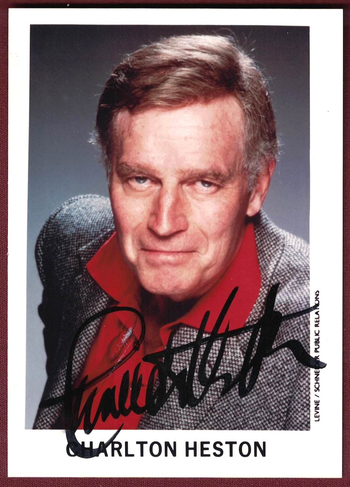

Product No. HEA-0275
$175
Shipping: $8.95
Description
Signed 3.5x5 inch color photograph. Not inscribed.
Full Description
Charlton Heston (Deceased) Charlton Heston was an American actor known for his commanding screen presence and leading roles in some of Hollywood’s most famous historical and biblical epics. He was born on October 4, 1923, in Wilmette, Illinois. Heston became a major star during the 1950s and 1960s. His best-known role was Judah Ben-Hur in the 1959 film Ben-Hur, for which he won the Academy Award for Best Actor. He also portrayed Moses in Cecil B. DeMille’s The Ten Commandments. His other notable films included The Greatest Show on Earth, El Cid, The Agony and the Ecstasy, Planet of the Apes, Soylent Green, and The Omega Man. Heston also worked extensively in theater and television and served as president of the Screen Actors Guild. Later in life, he became widely known for his leadership role in the National Rifle Association. Over a career spanning more than five decades, Heston became closely associated with heroic, larger-than-life characters and epic filmmaking. Charlton Heston died on April 5, 2008, at age 84.
Condition
Excellent condition